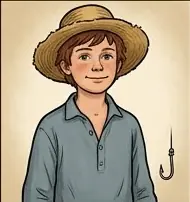
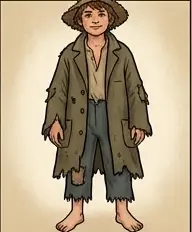
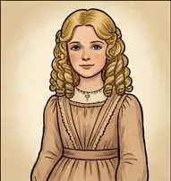
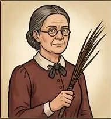
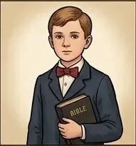
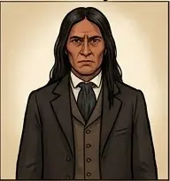
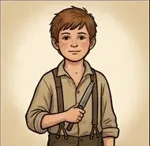
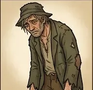
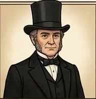
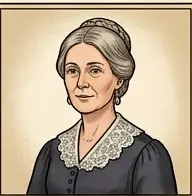

Explore / Adventure & Exploration
The Adventures of Tom Sawyer
by Mark Twain
AdventureClassicEnglish
Tom Sawyer is a mischievous boy in a Mississippi River town who tricks his friends into whitewashing a fence, witnesses a murder with his friend Huck, and later finds himself lost in a cave with Becky Thatcher.
8 chapters. Illustrated adaptation in 8 chapters.
Table of Contents
Dramatis Personae
-

Tom Sawyer The mischievous boy of St. Petersburg -

Huckleberry Finn Tom’s free-spirited friend -

Becky Thatcher The new girl Tom adores -

Aunt Polly Tom’s aunt, who raises him -

Sid Sawyer Tom’s quiet half-brother -

Injun Joe The man behind the graveyard murder -

Joe Harper Tom’s friend and fellow pirate -

Muff Potter A harmless drunkard accused of murder -

Judge Thatcher Becky’s father -

The Widow Douglas The kind widow who takes in Huck
Chapters here are formatted for reading convenience from the authoritative edition.